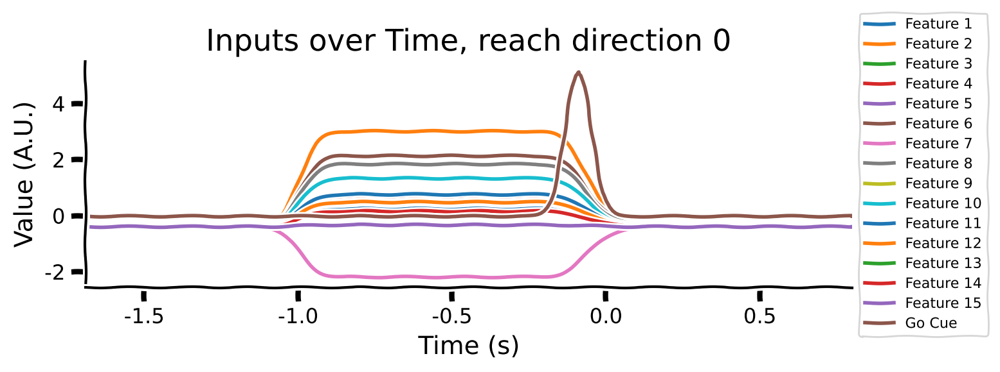
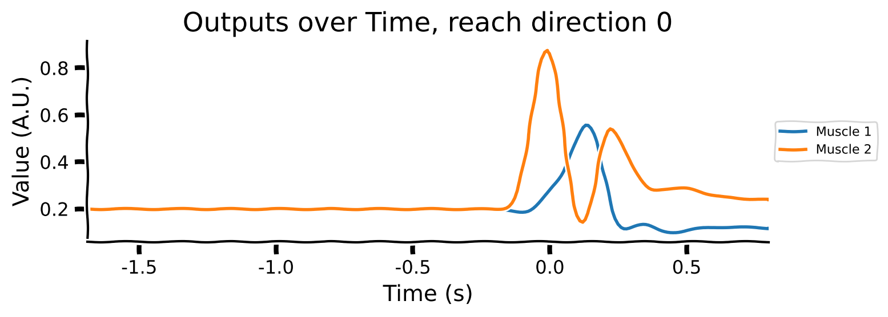
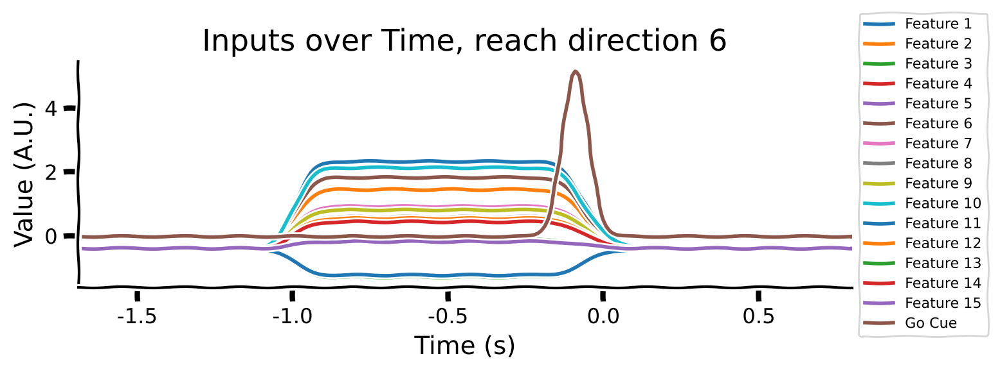
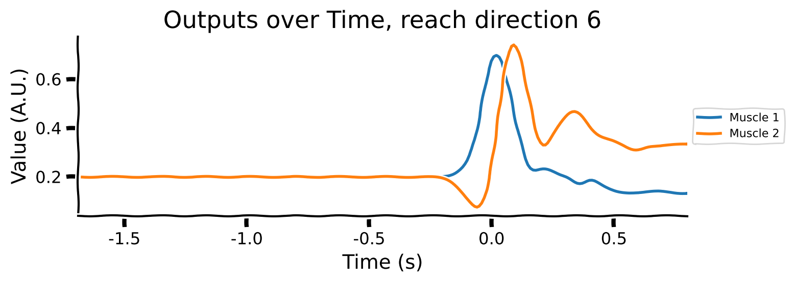
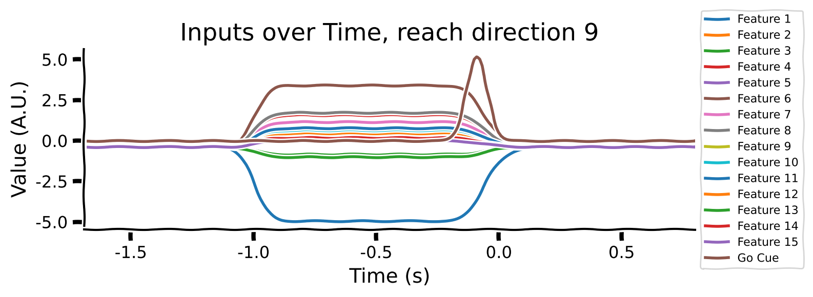
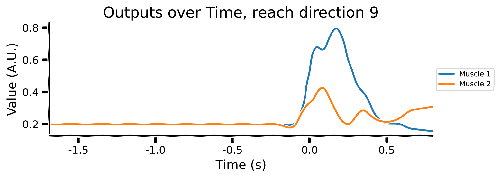
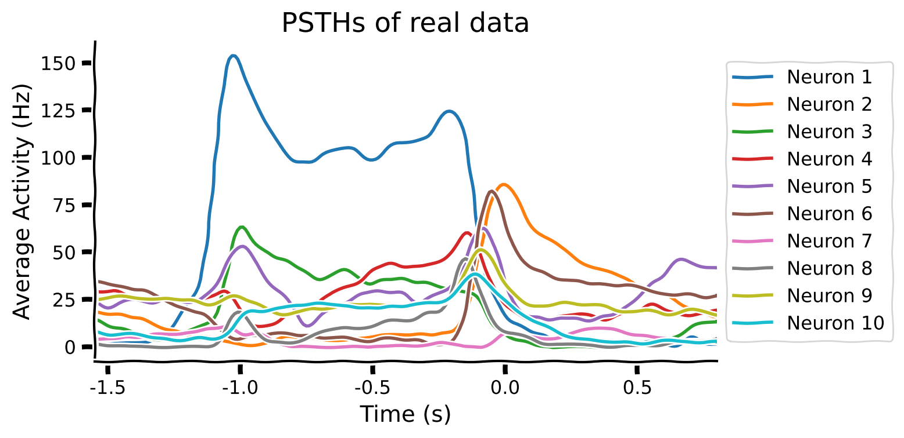

Tutorial 2: Generalization in Neuroscience#
Week 1, Day 1: Generalization
By Neuromatch Academy
Content creators: Samuele Bolotta, Patrick Mineault and Shreya Saxena
Content reviewers: Samuele Bolotta, Lily Chamakura, RyeongKyung Yoon, Yizhou Chen, Ruiyi Zhang, Aakash Agrawal, Alish Dipani, Hossein Rezaei, Yousef Ghanbari, Mostafa Abdollahi, Hlib Solodzhuk, Alex Murphy
Production editors: Konstantine Tsafatinos, Ella Batty, Spiros Chavlis, Samuele Bolotta, Hlib Solodzhuk, Alex Murphy
Tutorial Objectives#
Estimated timing of tutorial: 75 minutes
This tutorial will introduce you to generalization in neuroscience. We’ll look at a classic neuroscience paper, Sussillo et al. (2015), that compares how artificial and biological neural networks solve different motor tasks. This paper looks at how linear arm movements are generated in motor cortex; later extensions of these ideas (e.g. Codol et al. 2024; Almani et al. 2024) address how more complex skilled movements, including handwriting, can be generated, continuing our theme for today’s tutorials. We’ll look at a popular AI-derived framework for understanding how the brain solves tasks: task-driven neural networks.
Our learning goals for this tutorial are as follows:
Understand core goals in neuroscience. Examine the fundamental questions that drive neuroscience research, such as the ‘What’, ‘How’, and ‘Why’ behind neurological functions and behaviors.
Conceptualize what generalization means in the context of neuroscience, understanding how principles of neural generalization can inform and be informed by artificial intelligence.
Evaluate the impact of architectural choices. Discuss how different architectural decisions and the selection of priors in model design can introduce inductive biases, affecting the generalization capabilities of both neural and artificial systems.
Illustrate robustness in noisy environments. Identify and describe real-world instances where the pursuit of robustness against noise has led to converging strategies in both neuroscience and artificial intelligence.
If you want to download the slides: https://osf.io/download/79523/
<__main__._NoOpWidget at 0x7f51483ce530>
Setup#
Install and import feedback gadget#
Show code cell source
# @title Install and import feedback gadget
!pip install numpy scipy matplotlib torch tqdm vibecheck --quiet
from vibecheck import DatatopsContentReviewContainer
def content_review(notebook_section: str):
return DatatopsContentReviewContainer(
"", # No text prompt
notebook_section,
{
"url": "https://pmyvdlilci.execute-api.us-east-1.amazonaws.com/klab",
"name": "neuromatch_neuroai",
"user_key": "wb2cxze8",
},
).render()
feedback_prefix = "W1D1_T2"
Import dependencies#
Figure settings#
Show code cell source
# @title Figure settings
logging.getLogger('matplotlib.font_manager').disabled = True
%matplotlib inline
%config InlineBackend.figure_format = 'retina' # perform high definition rendering for images and plots
plt.style.use("https://raw.githubusercontent.com/NeuromatchAcademy/course-content/main/nma.mplstyle")
Plotting functions#
Show code cell source
# @title Plotting functions
xlim = (-1.8, .7)
def plot_inputs_over_time(timesteps, avg_inputs, title='Inputs over Time'):
"""
Plot the inputs over time.
Inputs:
- timesteps (list or array-like): A sequence of time steps at which the inputs were recorded.
This acts as the x-axis in the plot, representing the progression of time.
- avg_inputs (list or array-like): The average values of inputs corresponding to each time step.
These values are plotted on the y-axis, showing the magnitude of inputs over time.
- title (string): The title of the plot
Returns:
This function generates and displays a plot using Matplotlib.
"""
with plt.xkcd():
plt.figure(figsize=(8, 3))
num_features = avg_inputs.shape[1] if hasattr(avg_inputs, 'shape') else len(avg_inputs[0])
for feature_idx in range(num_features):
current_feature_values = avg_inputs[:, feature_idx] if hasattr(avg_inputs, 'shape') else [row[feature_idx] for row in avg_inputs]
label = f'Feature {feature_idx + 1}' if feature_idx < num_features - 1 else 'Go Cue'
plt.plot(timesteps, current_feature_values, label=label)
plt.title(title)
plt.xlabel('Time (s)')
plt.ylabel('Value (A.U.)')
plt.subplots_adjust(right=0.7)
plt.legend(loc='center left', bbox_to_anchor=(1, 0.5), fontsize=8)
plt.tight_layout()
plt.xlim(min(timesteps), max(timesteps))
plt.show()
def plot_muscles_over_time(timesteps, avg_output, title='Muscles over Time'):
"""
Plot the average outputs over time for two muscles to visualize changes in output values.
The avg_output is expected to be a 250x2 array where each column corresponds to a different muscle.
Inputs:
- timesteps (list or array-like): A sequence of time steps at which the outputs were recorded.
This acts as the x-axis in the plot, representing the progression of time.
- avg_output (array-like, shape [250, 2]): The average values of outputs, with each column
representing the output over time for each muscle.
- title (string): The title of the plot
Returns:
This function generates and displays a plot using Matplotlib.
"""
with plt.xkcd():
plt.figure(figsize=(8, 3)) # Set the figure size
plt.plot(timesteps, avg_output[:, 0], label='Muscle 1') # Plot for muscle 1
plt.plot(timesteps, avg_output[:, 1], label='Muscle 2') # Plot for muscle 2
plt.title(title)
plt.xlabel('Time (s)')
plt.ylabel('Value (A.U.)')
# Adjust plot margins to provide space for the legend outside the plot
plt.subplots_adjust(right=0.7)
plt.legend(loc='center left', bbox_to_anchor=(1, 0.5), fontsize=8) # Placing legend outside
plt.tight_layout()
plt.xlim(min(timesteps), max(timesteps)) # Ensuring x-axis covers the range of timesteps
plt.show()
def plot_training_validation_losses(epoch_losses, val_losses, actual_num_epochs, title):
"""
This function plots the training and validation losses over epochs.
Inputs:
- epoch_losses (list of float): List containing the training loss for each epoch. Each element is a float
representing the loss calculated after each epoch of training.
- val_losses (list of float): List containing the validation loss for each epoch. Similar to `epoch_losses`, but
for the validation set, allowing for the comparison between training and validation performance.
- actual_num_epochs (int): The actual number of epochs the training went through. This could be different from
the initially set number of epochs if early stopping was employed. It determines the range of the x-axis
in the plot.
- title (str): A string that sets the title of the plot. This allows for customization of the plot for better
readability and interpretation.
Outputs:
This function generates and displays a plot using matplotlib.
"""
with plt.xkcd():
plt.figure(figsize=(8, 4))
plt.plot(range(1, actual_num_epochs + 1), epoch_losses, label='Training Loss')
plt.plot(range(1, actual_num_epochs + 1), val_losses, label='Validation Loss')
plt.xlabel('Epoch')
plt.ylabel('Loss')
plt.title(title)
plt.legend()
plt.xlim(xlim)
plt.show()
# Plot hidden units in UnregularizedRNN
def plot_hidden_unit_activations(hidden_states, times, neurons_to_plot=5, title='PSTHs of Hidden Units'):
"""
This function plots the average activation of a specified number of neurons from the hidden layers
of a neural network over a certain number of timesteps.
Inputs:
hidden_states (tensor): A 2D tensor containing the hidden states of a network. The dimensions
should be (time, features), where 'time' represents the sequence of
timesteps, 'batch' represents different data samples, and 'features' represents
the neuron activations or features at each timestep.
times (tensor): The time range that we focus on.
neurons_to_plot (int, optional): The number of neuron activations to plot, starting from the first neuron.
Defaults to 5.
title (str, optional): The title of the plot, allowing customization for specific analyses or presentations.
Defaults to 'PSTHs of Hidden Units'.
This function generates and displays a plot of the average activation of specified
neurons over the selected timesteps, providing a visual analysis of neuron behavior within the network.
"""
# Apply the nonlinearity to each hidden state before averaging
rectified_tanh = lambda x: np.where(x > 0, np.tanh(x), 0)
hidden_states_rectified = rectified_tanh(np.array(hidden_states))
# Plotting
with plt.xkcd():
plt.figure(figsize=(8, 4))
for i in range(min(neurons_to_plot, hidden_states_rectified.shape[1])):
plt.plot(times, hidden_states_rectified[:, i], label=f'Neuron {i+1}')
plt.xlabel('Time Steps')
plt.ylabel('Activation')
plt.title(title)
# Adjust plot margins to provide space for the legend outside the plot
plt.subplots_adjust(right=0.8) # Adjust this value to create more or less space on the right
plt.legend(loc='center left', bbox_to_anchor=(1, 0.5), fontsize='small') # Placing legend outside
plt.xlim(times[0], times[-1]) # Setting x-axis limits based on the provided time tensor
plt.show()
def plot_psth(data, condition=0, neurons_to_plot=5, title='PSTHs of real data'):
"""
This function plots PSTHs from real neural data
Args:
data (dict): The data from the mat file from Sussillo et al. (2015)
condition (int, optional): The condition (from 0 to 26). Defaults to 0.
neurons_to_plot (int, optional): The number of neuron activations to plot, starting from the first neuron.
Defaults to 5.
title (str, optional): The title for the PSTH plot. This allows users to specify the context or the
experiment from which the data is derived.
Outputs:
This function directly generates and displays a plot using matplotlib
to visually represent the neural activity across time bins.
"""
# Plot
with plt.xkcd():
plt.figure(figsize=(8, 4))
for neuron_idx in range(neurons_to_plot): # Iterate over each feature/channel
times_real = data['comboNjs'][0, neuron_idx]['interpTimes'][0]['times'][0].squeeze().astype(float)
t0 = float(data['comboNjs'][0, neuron_idx]['interpTimes'][0]['moveStarts'][0].item())
times_real = (times_real - t0) / 1000.0
spikes_real = data['comboNjs'][0, neuron_idx]['cond'][0]['interpPSTH'][0].squeeze()
plt.plot(times_real, spikes_real, label=f'Neuron {neuron_idx+1}')
plt.xlabel('Time (s)')
plt.ylabel('Average Activity (Hz)')
plt.title(title)
# Adjust plot margins and place legend outside the plot
plt.subplots_adjust(right=0.8)
plt.legend(loc='center left', bbox_to_anchor=(1, 0.5), fontsize='small')
plt.xlim(times_real[0], times_real[-1]) # Assume times_real is defined
plt.show()
def plot_perturbation_results(perturbation_strengths, results_regularized, results_unregularized, title):
"""
This function plots the normalized error percentages of two models (regularized and unregularized) under various
perturbation strengths.
Inputs:
perturbation_strengths (list of float): A list of perturbation strengths tested, representing the
magnitude of perturbations applied to the model input or parameters.
results_regularized (list of tuples): Each tuple contains (mean error, standard deviation) for the regularized model
at each perturbation strength.
results_unregularized (list of tuples): Each tuple contains (mean error, standard deviation) for the unregularized model
at each perturbation strength.
title (str): The title of the plot, allowing for customization to reflect the analysis context.
The function generates and displays a bar plot comparing the normalized error
rates of regularized and unregularized models under different perturbation strengths, with error bars representing the
standard deviation of errors, normalized to percentage scale.
"""
mean_errors_regularized, std_errors_regularized = zip(*results_regularized)
mean_errors_unregularized, std_errors_unregularized = zip(*results_unregularized)
print("mean_errors_regularized", mean_errors_regularized)
print("mean_errors_unregularized", mean_errors_unregularized)
# Plotting
with plt.xkcd():
plt.figure(figsize=(8, 6))
bar_width = 0.35
bar_positions = np.arange(len(perturbation_strengths))
plt.bar(bar_positions - bar_width/2, mean_errors_regularized, width=bar_width, color='blue', yerr=std_errors_regularized, capsize=5, label='Regularized Model')
plt.bar(bar_positions + bar_width/2, mean_errors_unregularized, width=bar_width, color='red', yerr=std_errors_unregularized, capsize=5, label='Unregularized Model')
plt.xlabel('Perturbation Magnitude')
plt.ylabel('Normalized Error (%)')
plt.title(title)
plt.xticks(bar_positions, [f"{x:.5f}" if x < 0.1 else f"{x}" for x in perturbation_strengths])
plt.legend()
plt.ylim(0, 100)
plt.show()
Set device (GPU or CPU). Execute set_device()#
Show code cell source
# @title Set device (GPU or CPU). Execute `set_device()`
# especially if torch modules used.
# @markdown
# inform the user if the notebook uses GPU or CPU.
def set_device():
"""
Determines and sets the computational device for PyTorch operations based on the availability of a CUDA-capable GPU.
Outputs:
- device (str): The device that PyTorch will use for computations ('cuda' or 'cpu'). This string can be directly used
in PyTorch operations to specify the device.
"""
device = "cuda" if torch.cuda.is_available() else "cpu"
if device != "cuda":
print("GPU is not enabled in this notebook. \n"
"If you want to enable it, in the menu under `Runtime` -> \n"
"`Hardware accelerator.` and select `GPU` from the dropdown menu")
else:
print("GPU is enabled in this notebook. \n"
"If you want to disable it, in the menu under `Runtime` -> \n"
"`Hardware accelerator.` and select `None` from the dropdown menu")
return device
device = set_device()
GPU is not enabled in this notebook.
If you want to enable it, in the menu under `Runtime` ->
`Hardware accelerator.` and select `GPU` from the dropdown menu
Set random seed, when using pytorch#
Executing set_seed(seed=seed) will specify the exact random seed to use
Show code cell source
# @title Set random seed, when using `pytorch`
# @markdown Executing `set_seed(seed=seed)` will specify the exact random seed to use
# Call `set_seed` function in the exercises to ensure reproducibility.
def set_seed(seed=None, seed_torch=True):
if seed is None:
seed = np.random.choice(2 ** 32)
random.seed(seed)
np.random.seed(seed)
if seed_torch:
torch.manual_seed(seed)
torch.cuda.manual_seed_all(seed)
torch.cuda.manual_seed(seed)
torch.backends.cudnn.benchmark = False
torch.backends.cudnn.deterministic = True
print(f'Random seed {seed} has been set.')
# In case that `DataLoader` is used
def seed_worker(worker_id):
worker_seed = torch.initial_seed() % 2**32
np.random.seed(worker_seed)
random.seed(worker_seed)
Data retrieval#
Show code cell source
# @title Data retrieval
import os
import requests
import hashlib
def retrieve_file(fname, url, expected_md5):
# Check if the file already exists
if not os.path.isfile(fname):
try:
# Attempt to download the file
response = requests.get(url)
except requests.ConnectionError:
# Handle connection errors during the download
print("!!! Failed to download data !!!")
else:
# No connection errors, proceed to check the response
if response.status_code != requests.codes.ok:
# Check if the HTTP response status code indicates a successful download
print("!!! Failed to download data !!!")
elif hashlib.md5(response.content).hexdigest() != expected_md5:
# Verify the integrity of the downloaded file using MD5 checksum
print("!!! Data download appears corrupted !!!")
else:
# If download is successful and data is not corrupted, save the file
with open(fname, "wb") as fid:
fid.write(response.content) # Write the downloaded content to a file
# List of files to be downloaded with their respective URLs and expected MD5 hashes
files = [
("regularized_model_final.pth", "https://osf.io/kc7sb/download", "9435a9c2ea75766144bf840b25bfb97e"),
("unregularized_model_final.pth", "https://osf.io/9vsy5/download", "2e3dc9551b677206e2315788df354a91"),
("condsForSimJ2moMuscles.mat", "https://osf.io/wak7e/download", "257d16c4d92759d615bf5cac75dd9a1f"),
("m1_reaching_data.mat", "https://osf.io/p2x4n/download", "6fc65443b9632db47772dd2efaadeee0")
]
for fname, url, expected_md5 in files:
retrieve_file(fname, url, expected_md5)
Helper functions#
Show code cell source
# @title Helper functions
# Define a custom Rectified Tanh activation function
def rectified_tanh(x):
return torch.where(x > 0, torch.tanh(x), 0)
def grad_rectified_tanh(x):
return torch.where(x > 0, 1 - torch.tanh(x)**2, 0)
def grad_tanh(x):
return 1 - torch.tanh(x)**2
def compute_l2_regularization(parameters, alpha):
l2_reg = sum(p.pow(2.0).sum() for p in parameters)
return alpha * l2_reg
def prepare_dataset(file_path, feature_idx=7, muscle_idx=1):
"""
Load and preprocess data from a .mat file for RNN training.
Args:
- file_path: str, path to the .mat file containing the dataset.
- feature_idx: int, index for individual features for plotting. Max 14.
- muscle_idx: int, index for muscles for plotting. Max 1.
Returns:
- normalised_inputs: Tensor, normalized and concatenated Plan and Go Envelope tensors.
- avg_output: Tensor, average muscle activity across conditions and delays.
- timesteps: np.ndarray, array of time steps for plotting.
"""
# Load the .mat file
data = scipy.io.loadmat(file_path)
# Extract condsForSim struct
conds_for_sim = data['condsForSim']
# Initialize lists to store data for all conditions
go_envelope_all, plan_all, muscle_all = [], [], []
# Get the number of conditions (rows) and delay durations (columns)
num_conditions, num_delays = conds_for_sim.shape
times = conds_for_sim['timesREmove'][0][0] / 1000.0
# Select the same time period as the PSTHs
rg = slice(46, 296)
for i in range(num_conditions): # Loop through each condition
go_envelope_condition, plan_condition, muscle_condition = [], [], []
for j in range(num_delays): # Loop through each delay duration
condition = conds_for_sim[i, j]
go_envelope, plan, muscle = condition['goEnvelope'], condition['plan'], condition['muscle']
selected_muscle_data = muscle[:, [3, 4]] # Select only specific muscles
go_envelope_condition.append(go_envelope[rg, :])
plan_condition.append(plan[rg, :])
muscle_condition.append(selected_muscle_data[rg, :])
# Convert lists of arrays to tensors and append to all conditions
go_envelope_all.append(torch.tensor(np.array(go_envelope_condition), dtype=torch.float32))
plan_all.append(torch.tensor(np.array(plan_condition), dtype=torch.float32))
muscle_all.append(torch.tensor(np.array(muscle_condition), dtype=torch.float32))
times = times[rg]
# Stack tensors for all conditions
go_envelope_tensor, plan_tensor, output = torch.stack(go_envelope_all), torch.stack(plan_all), torch.stack(muscle_all)
# Cleanup to free memory
del data, conds_for_sim, go_envelope_all, plan_all, muscle_all
gc.collect()
# Normalize and Standardize Plan Tensor
plan_tensor = normalize_and_standardize(plan_tensor)
# Normalise and concatenate Plan and Go Envelope Tensors
normalised_inputs = normalize_and_standardize(torch.cat([plan_tensor, go_envelope_tensor], dim=3))
fixed_delay = 3
inputs_no_delay = normalised_inputs[:, fixed_delay, ...]
output_no_delay = output[:, fixed_delay, ...]
return inputs_no_delay, normalised_inputs, output_no_delay, output, times
def normalize_and_standardize(tensor):
"""
Normalize and standardize a given tensor.
Args:
- tensor: Tensor, the tensor to be normalized and standardized.
Returns:
- standardized_normalized_tensor: Tensor, the normalized and standardized tensor.
"""
min_val, max_val = tensor.min(), tensor.max()
tensor = (tensor - min_val) / (max_val - min_val) # Normalize
mean, std = tensor.mean(), tensor.std()
return (tensor - mean) / std # Standardize
def train_val_split():
"""Split the data into train and validation splits.
"""
train_split, val_split = random_split(range(27), [20, 7])
return sorted(list(train_split)), sorted(list(val_split))
Video 1: Overview#
Video available at https://youtube.com/watch?v=lW0U2vv5BmQ
Video available at https://www.bilibili.com/video/BV1g1421C7G4
<__main__._NoOpWidget at 0x7f5068ac7460>
Submit your feedback#
Show code cell source
# @title Submit your feedback
content_review(f"{feedback_prefix}_overview_video")
<__main__._NoOpWidget at 0x7f5068ac6200>
Definitions#
Peristimulus Time Histogram (PSTH) - A visualization tool to temporally display neuronal firing rates around an external stimulus event
Section 1: Motivation: How the brain generates motor commands#
Let’s put ourselves in the mindset of a neuroscientist trying to understand how the brain generates motor sequences. A classic example of a complex motor sequence is handwriting, which we looked at in the last tutorial. This skill involves coordinated movement of the arm, wrist and fingers.
The mapping between the goal (e.g. moving the arm) and the sequence of motor commands that drive different muscles is highly nonlinear and recurrent. Furthermore, the brain must generalize beyond its training data; for instance, when the recurrent connections of the brain attempt to maintain stability in the face of noise in the environment (homeostasis effects), or when the arm is under different pressures. How does the brain do that?

Image adapted from Rizzoglio et al. (2023). From monkeys to humans: observation-based EMG brain–computer interface decoders for humans with paralysis. Journal of Neural Engineering. 10.1088/1741-2552/ad038e. CC-BY 4.0.
Our neuroscientist is trying to address a how question: how does the brain find solutions to complex control problems that generalize? Recurrent neural networks (RNNs) are a type of artificial neural network that have proven to be a very useful tool to address these how questions. They mimic the adaptability and plasticity observed in biological neural networks through interconnected artificial neurons, weights dictating connection strengths, and activation functions triggering neuron responses. Task-driven neural networks are trained in silico (using computers) to solve similar tasks to ones that the brain must solve. With the specification to prefer simple solutions over more complex solutions, model representations are often similar to the ones that the brain seems to find. The trained artificial neural networks can then be used to investigate, mechanistically, how a task is solved in the brain.

Let’s illustrate these ideas with a classic paper in this field: Sussillo et al. (2015). They train an RNN to solve a motor task by learning to map movement direction commands to arm movements recorded via electromyography (EMG). Looking inside this RNN gives them the ability to ask questions about generalization. They then compare the model representations from the RNN to spike data from the motor cortex (M1) of a monkey performing a similar task. Do they perform similarly? Is the RNN performing the same kind of task as the brain, in a similar way?
Video 2: Setup#
Video available at https://youtube.com/watch?v=AEQJ6e32ZeQ
Video available at https://www.bilibili.com/video/BV1D6421f7vH
<__main__._NoOpWidget at 0x7f5068a29ae0>
Submit your feedback#
Show code cell source
# @title Submit your feedback
content_review(f"{feedback_prefix}_setup")
<__main__._NoOpWidget at 0x7f5068a29750>
Section 2: Training an unregularized task-driven neural network#
In this activity, our goal is to train recurrent neural networks to mimic the muscle activity (EMG) of monkeys during arm movements. The challenge is to transform simple inputs (task features) into complex patterns of muscle activity over time and space.
# Define the path to the dataset file containing conditions for simulation of muscles
file_path = 'condsForSimJ2moMuscles.mat'
# Prepare the dataset by loading and processing it from the specified file path
normalised_inputs, normalised_inputs_with_delay, outputs, outputs_with_delay, times = prepare_dataset(file_path)
print("Shape of the inputs", normalised_inputs.shape)
print("Shape of the output", outputs.shape)
Shape of the inputs torch.Size([27, 250, 16])
Shape of the output torch.Size([27, 250, 2])
These dimensions correspond to the following:
27 conditions, one for each trial in the data
250 time steps (each trial was 2.5 seconds in length, measured at 100 Hz)
The inputs are 16-dimensional, with 15 dimensions corresponding to the reach condition (explained below) and the 16th dimension corresponding to the Go Cue.
The outputs are 2-dimensional, corresponding to the target electromyography (EMG) data for 2 muscles.
The inputs to the model are 16-dimensional vectors that specify which reach to perform. Each reach condition is represented by a unique 15-dimensional vector, which remains constant during the movement preparation period from -1s to 0s. The 16th dimension, a Go Cue, features a small bump at 0s, signaling the model to start generating the output.
To illustrate, consider a robot arm that needs to reach different objects positioned in various locations. The condition-specific inputs would guide the robot on which object to reach for (e.g., left, right, up, down). Prior to each reach, the robot’s “brain” (neural activity) prepares in a particular manner, and this readiness is recorded. These readiness signals are then fed into the RNN, helping it understand and prepare for the specific reach.
Initially, the robot remains still (hold cue). Following a brief delay, it receives a signal to begin the reach. These delays and specific inputs train the robot to accurately perform the reach for each condition.
Take a look at the output shapes printed above and mentally visualize the structure of the array. Let’s look at the few of the inputs and outputs to get a better understanding of the data. Note that “Reach direction \(N\)” refers to one of the reach conditions (e.g. move down / up / left / right).
# Averaging across conditions and delays
reach_directions = [0, 6, 9]
for reach in reach_directions:
# Plot inputs and outputs
one_direction = normalised_inputs[reach, ...].clone()
# Exaggerate the Go Cue for visualization purposes
one_direction[:, -1] *= 5
plot_inputs_over_time(times, one_direction, title=f'Inputs over Time, reach direction {reach}')
plot_muscles_over_time(times, outputs[reach, ...], title=f'Outputs over Time, reach direction {reach}')






As you can see:
the movement (reach condition) to be generated is encoded by a 16-dimensional signal during the hold period (from -1 to 0s).
the 16-dimensional signal is unique for each reach direction
The Go Cue (feature 16, timepoint 0) signals that it’s time to start generating the movement
The movements of the muscles are generated right after the GO Cue.
Let’s create a PyTorch Dataset object to hold the data we just described.
class TimeseriesDataset(Dataset):
def __init__(self, inputs, targets):
"""
inputs: Tensor of shape [num_examples, time, input_features]
targets: Tensor of shape [num_examples, time, output_features]
"""
self.inputs = inputs
self.targets = targets
self.num_conditions = inputs.shape[0]
assert inputs.shape[0] == targets.shape[0]
def __len__(self):
return self.num_conditions
def __getitem__(self, idx):
input_seq = self.inputs[idx]
target_seq = self.targets[idx]
return input_seq, target_seq
# Create the dataset with the fixed delay
train_idx, val_idx = train_val_split()
train_dataset = TimeseriesDataset(normalised_inputs[train_idx], outputs[train_idx])
val_dataset = TimeseriesDataset(normalised_inputs[val_idx], outputs[val_idx])
# Create DataLoaders
batch_size = 20
unregularized_train_loader = DataLoader(train_dataset, batch_size=batch_size, shuffle=True)
unregularized_val_loader = DataLoader(val_dataset, batch_size=batch_size, shuffle=False)
Submit your feedback#
Show code cell source
# @title Submit your feedback
content_review(f"{feedback_prefix}_Setup")
<__main__._NoOpWidget at 0x7f505890f970>
Coding exercise 2.1: Defining an unregularized RNN#
Let’s start by defining an unregularized RNN by inheriting from nn.Module. This RNN takes in the time-varying control inputs and outputs muscle outputs.
The model is a single-layer recurrent neural network defined in continuous time. The network takes in an input vector (all timepoints) and outputs muscle EMG (also for all timepoints). The hidden state of the network \(\mathbf{x}\) evolves according to the equation:
Here we have:
\(\mathbf{u}\) is the stimulus input at the current timestep
\(\mathbf{B}\mathbf{u}\) is the feedforward drive (activity) of the neural network, the inputs \(\mathbf{u}\) are linearly projected through a set of weights \(\mathbf{B}\)
\(\mathbf{r} = |\tanh(\mathbf{x})|\) is the hidden activity passed through a rectifying, saturating non-linear activation function
\(\mathbf{J}\mathbf{r}\) is the recurrent drive (activity) of the neural network, the recurrent activity \(\mathbf{r}\) is linearly projected through a set of weights \(\mathbf{J}\)
\(\mathbf{b}\) is a constant
\(\tau\) is a scalar corresponding to the time scale of the network, 50 ms
To transform this to a standard discrete-time neural network, we use Euler integration with a time step equal to the resolution of the simulation, 10ms. See the Comp Neuro W2D2 to brush up on this idea if this idea is not clear.
Thus, the discretized update equation will be:
There are a few more parameters to consider:
The scale of the parameters of the input mixing matrix \(\mathbf{B}\) is determined by \(h\) (not shown in equation)
The scale of the parameters of the input mixing matrix \(\mathbf{J}\) is determined by \(g\) (not shown in equation).
We initialize \(g\) to a value larger than 1, so the neural network is in a so-called chaotic regime.
The network is initialized with hidden state \(\mathbf{x}=0\)
Finally, the model’s predicted EMG activity is given by a linear readout:
In this notation, we can interpret \(\mathbf{r}\) as the firing rates of the neurons. Take a look at the equation above: the hidden state, \(\mathbf{x}\) (representation of stimuli in the brain), is evolving over time and is driven by current stimuli input \(\mathbf{u}\) and firing rates of neurons in the previous time step, \(\mathbf{r}\). EMG activity, \(z\), is a direct linear projection from firing rates.
Let’s code up this unregularized neural network.
class UnregularizedRNN(nn.Module):
def __init__(self, input_size, hidden_size, output_size, g, h, tau_over_dt=5):
super(UnregularizedRNN, self).__init__()
self.hidden_size = hidden_size
self.tau_over_dt = tau_over_dt
self.output_linear = nn.Linear(hidden_size, output_size)
# Weight initialization
self.J = nn.Parameter(torch.randn(hidden_size, hidden_size) * (g / torch.sqrt(torch.tensor(hidden_size, dtype=torch.float))))
self.B = nn.Parameter(torch.randn(hidden_size, input_size) * (h / torch.sqrt(torch.tensor(input_size, dtype=torch.float))))
self.bx = nn.Parameter(torch.zeros(hidden_size))
# Nonlinearity
self.nonlinearity = rectified_tanh
def forward(self, input, hidden):
#################################################
# TODO for students: fill in the missing variables
# Fill out function and remove
raise NotImplementedError("Student exercise: fill in the missing variables")
#################################################
# Calculate the visible firing rate from the hidden state.
firing_rate_before = ...
# Update hidden state
recurrent_drive = torch.matmul(self.J, firing_rate_before.transpose(0, 1))
input_drive = torch.matmul(self.B, input.transpose(0, 1))
total_drive = recurrent_drive + input_drive + self.bx.unsqueeze(1)
total_drive = total_drive.transpose(0, 1)
# Euler integration for continuous-time update
hidden = hidden + (1 / self.tau_over_dt) * (-hidden + total_drive)
# Calculate the new firing rate given the update.
firing_rate = ...
# Project the firing rate linearly to form the output
output = ...
return output, hidden
def init_hidden(self, batch_size):
return torch.zeros(batch_size, self.hidden_size)
input_size = 16
hidden_size = 10
output_size = 2
g = 4
h_val = 1.0
model = UnregularizedRNN(input_size, hidden_size, output_size, g, h_val)
model.to(device)
for inputs, targets in unregularized_train_loader:
hidden = model.init_hidden(batch_size)
output, hidden_after = model(inputs[:, 0, :].to(device), hidden.to(device))
assert output.shape == targets[:, 0].shape
assert hidden_after.shape == hidden.shape
break
Great! Now we have the model ready to go.
Note: In further code below, we’ll reference the inputs variable generated in the cell above (it will be from the last unpacking operation in unregularized_train_loader).
Submit your feedback#
Show code cell source
# @title Submit your feedback
content_review(f"{feedback_prefix}_Coding_Exercise_2.1")
<__main__._NoOpWidget at 0x7f5058922a70>
Coding exercise 2.2: Evaluate function#
A trajectory in the current context means a complete temporal sequence over the duration of each trial. We’ll need a function that can generate an entire trajectory based on a set of inputs. To do that, we’ll first initialize the hidden state of the model, then recurrently feed the inputs and the hidden states back into the model. Fill in the missing lines to generate an entire trajectory.
def generate_trajectory(model, inputs, device):
#################################################
# TODO for students: fill in the missing variables
# Fill out function and remove
raise NotImplementedError("Student exercise: fill in the missing variables")
#################################################
inputs = inputs.to(device)
batch_size = inputs.size(0)
h = ... #note that `UnregularizedRNN` has a specific method for that
loss = 0
outputs = []
hidden_states = []
with torch.no_grad():
for t in range(inputs.shape[1]):
# Forward the model's input and hidden state to obtain the model
# output and hidden state *h*.
# Note that you should index the input tensor by the time dimension
# Capture any additional outputs in 'rest'
output, h, *rest = ...
outputs.append(output)
hidden_states.append(h.detach().clone())
return torch.stack(outputs, axis=1).to(device), torch.stack(hidden_states, axis=1).to(device)
trajectory, hidden_states = generate_trajectory(model,
inputs[0].unsqueeze(0),
device)
with plt.xkcd():
# Remove unitary dimension, detach from PyTorch computational
# graph, move to the CPU and convert to a numpy array
hidden_states = hidden_states.squeeze().detach().cpu().numpy()
trajectory = trajectory.squeeze().detach().cpu().numpy()
plot_hidden_unit_activations(hidden_states=hidden_states,
times=times,
neurons_to_plot=7,
title='Hidden units')
plot_muscles_over_time(times, trajectory, 'Generated muscle activity')
Remember, our model is untrained. It’s not supposed to give great results yet. However, it’s very good practice to see the outputs of an untrained network to get a sense of the starting position the model is at before any training has occurred. In some NeuroAI applications, untrained models can generate activity that is surprisingly similar to some brain activity in some scenarios, so it pays to know what your model looks like not only after training, but also before.
This untrained model generates funky oscillatory activity, but we’ll fix that during training!
Submit your feedback#
Show code cell source
# @title Submit your feedback
content_review(f"{feedback_prefix}_Coding_Exercise_2.2")
<__main__._NoOpWidget at 0x7f514817e2f0>
Activity 2.1: Evaluating the model#
We’re now ready to train our model. This involves:
Loading the data
Instantiating the model
Building a training loop
Using stochastic gradient descent (SGD) to train the model
To save you time, however, we’ve trained the model in advance. You’ll load a trained checkpoint. This trained model can generate the right muscle outputs in response to the right inputs. Let’s do a quick check to make sure this is the case.
# Instantiate model
input_size = 16
hidden_size = 150
output_size = 2 # Number of muscles
g = 4 # g value
h_val = 1.0 # h value
unregularized_model = UnregularizedRNN(input_size, hidden_size, output_size, g, h_val)
unregularized_model.to(device) # Move model to the appropriate device
# Load the pretrained model
model_path = 'unregularized_model_final.pth'
model_state_dict = torch.load(model_path, map_location=device)
unregularized_model.load_state_dict(model_state_dict)
unregularized_model.eval() # Set model to evaluation mode
# Example index
idx = 0
# Ensure data is on the correct device
sample_input = normalised_inputs[train_idx[idx], ...].to(device)
sample_target = outputs[train_idx[idx], ...].to(device)
# Generate trajectory
generated_target, hidden_states = generate_trajectory(unregularized_model, sample_input.unsqueeze(0), device)
# Plotting
plot_inputs_over_time(times, sample_input.cpu())
plot_muscles_over_time(times, sample_target.cpu(), 'Targets')
plot_muscles_over_time(times, generated_target.squeeze().detach().cpu().numpy(), 'Generated')
Earlier, we just plotted the time course of the hidden activity and generated muscle activity. Now, we do the same but we also include the observed muscle activity, which is the target of our training procedure. This is so we can compare how good the model is at capturing the dynamics of the muscle data when the monkey performed the task.
And as we can see, it does a pretty good job!
Submit your feedback#
Show code cell source
# @title Submit your feedback
content_review(f"{feedback_prefix}_Model_Evaluation")
<__main__._NoOpWidget at 0x7f5058923d00>
Activity 2.2: Comparing trained RNN with the brain#
Our trained RNN transforms a temporal sequence of inputs into a temporal sequence of muscle activations. In effect, the RNN is a stand-in (model) for motor cortex. The activity of the hidden units of the RNN might look like motor cortex. We plot different peri-stimulus temporal histograms (PSTHs) of real neurons when an animal performs a specific arm movement (reach condition). Then, we plot different PSTHs of hidden units of the unregularized RNN for comparison.
hidden_states = hidden_states.squeeze().detach().cpu().numpy()
plot_hidden_unit_activations(hidden_states=hidden_states,
times=times,
neurons_to_plot=10,
title='PSTHs of Hidden Units in UnregularizedRNN')
Let’s do the same now with real neural data. We load smoothed spiking data from Susillo et al. (2015). These are visualizations from trials where monkeys performed the same kind of reaching movement that we trained the artificial neural network to do.
data = scipy.io.loadmat('m1_reaching_data.mat')
plot_psth(data, neurons_to_plot=10)

Qualitatively, that doesn’t look like much of a match. A trained RNN that performs the same task as the brain can have very different latent representations. In later tutorials, we’ll cover in detail quantitative methods for evaluating how well representations in artificial and biological neural networks match each other; in particular. For now, let’s try to get a qualitative match between the two PSTHs by applying better regularization techniques.
Submit your feedback#
Show code cell source
# @title Submit your feedback
content_review(f"{feedback_prefix}_RNN_vs_Brain")
<__main__._NoOpWidget at 0x7f5039d1f280>
Video 3: Inductive Bias#
Video available at https://youtube.com/watch?v=O4cM86DcVUw
Video available at https://www.bilibili.com/video/BV1Gb421v7PH
<__main__._NoOpWidget at 0x7f50589225f0>
Submit your feedback#
Show code cell source
# @title Submit your feedback
content_review(f"{feedback_prefix}_inductive_bias")
<__main__._NoOpWidget at 0x7f5039dd7700>
Section 3: Training a regularized task-driven neural network#
The previous network found complicated solutions to the problem of generating muscle activity: the hidden activity of the network didn’t match to what we see in real neurons. We’d like to obtain more naturalistic solutions that better match the brain. We’ll attempt this by regularizing this network. Later, we’ll test this regularized network for robustness and generalization to see if this also affects the network’s ability to extrapolate beyond its training data.
Susillo et al. propose to regularize the network in many different ways.
Weight regularization
Synapses are expensive to grow and maintain. The authors thus propose to use a standard L2 penalty on the sum of squares of the weights:
Recall that \(W\) are the weights that map the RNN’s latent activity to the predicted EMG data, while \(B\) are the weights from the feedforward drive of the system. The penalty limits the magnitude of the weights, potentially leading to more biologically plausible solutions.
Firing rate regularization
Neural activity in biological neural networks is expensive. Thus, we add a penalty for the magnitude of the hidden activity in the network.
Here \(N\) is the number of hidden neurons and \(T\) is the total number of discrete time steps in the simulation, and \(r{it}\) is the activity of the hidden neurons over time.
Multiple delays
Neural activity should be robust to the exact delays between the preparatory input and the Go Cue. We augment the dataset with multiple delays between the signal and the Go Cue so that more varied examples exist that aren’t closely tied to the exact starting time of the Go Cue. This means we become more robust to such vairiations, which also boosts generalization.
Less chaotic initialization regime
We initialized the previous RNN with large weights, putting the network in a chaotic regime, with high sensitivity to changes in activity. We’ll dial down the initialization range in this network to obtain dynamics at the edge of chaos. In practice, this involves changing the parameter that controls the magnitude of the initial recurrent weights \(g\) from 4 to 1.5.
With all these changes in mind, we’re ready to implement the regularized model.
class RegularizedRNN(nn.Module):
def __init__(self, input_size, hidden_size, output_size, g, h, tau_over_dt=5):
super(RegularizedRNN, self).__init__()
self.hidden_size = hidden_size
self.tau_over_dt = tau_over_dt # Time constant
self.output_linear = nn.Linear(hidden_size, output_size)
# Weight initialization
self.J = nn.Parameter(torch.randn(hidden_size, hidden_size) * (g / torch.sqrt(torch.tensor(hidden_size, dtype=torch.float))))
self.B = nn.Parameter(torch.randn(hidden_size, input_size) * (h / torch.sqrt(torch.tensor(input_size, dtype=torch.float))))
self.bx = nn.Parameter(torch.zeros(hidden_size))
# Nonlinearity
self.nonlinearity = rectified_tanh
def forward(self, input, hidden):
# Calculate the visible firing rate from the hidden state.
firing_rate_before = self.nonlinearity(hidden)
# Update hidden state
recurrent_drive = torch.matmul(self.J, firing_rate_before.transpose(0, 1))
input_drive = torch.matmul(self.B, input.transpose(0, 1))
total_drive = recurrent_drive + input_drive + self.bx.unsqueeze(1)
total_drive = total_drive.transpose(0, 1)
# Euler integration for continuous-time update
hidden = hidden + (1 / self.tau_over_dt) * (-hidden + total_drive)
# Calculate the new firing rate given the update.
firing_rate = self.nonlinearity(hidden)
# Project the firing rate linearly to form the output
output = self.output_linear(firing_rate)
# Regularization terms (used for R1 calculation)
firing_rate_reg = firing_rate.pow(2).sum()
return output, hidden, firing_rate_reg
def init_hidden(self, batch_size):
# Initialize hidden state with batch dimension
return torch.zeros(batch_size, self.hidden_size)
We split the dataset into training and validation sets. Importantly, we keep the different delays corresponding to the same condition in the same set. Otherwise, we might experience data leakage, where we inadvertently allow information about test set data to become part of our training data, leading to an overly optimistic accuracy when we come to evaluate our model.
train_flattened_inputs = normalised_inputs_with_delay[train_idx].view(-1, *normalised_inputs_with_delay.shape[2:])
train_flattened_targets = outputs_with_delay[train_idx].view(-1, *outputs_with_delay.shape[2:])
val_flattened_inputs = normalised_inputs_with_delay[val_idx].view(-1, *normalised_inputs_with_delay.shape[2:])
val_flattened_targets = outputs_with_delay[val_idx].view(-1, *outputs_with_delay.shape[2:])
# Create the dataset with the fixed delay
train_dataset = TimeseriesDataset(train_flattened_inputs, train_flattened_targets)
val_dataset = TimeseriesDataset(val_flattened_inputs, val_flattened_targets)
# Create DataLoaders
batch_size = 20
regularized_train_loader = DataLoader(train_dataset, batch_size=batch_size, shuffle=True)
regularized_val_loader = DataLoader(val_dataset, batch_size=batch_size, shuffle=False)
Activity 3.1: Evaluating the model#
Let’s evaluate the model by looking at its generated activity! Once again, we skip the training of the model and load a model that has been trained previously, for convenience.
# Set the device
device = torch.device('cuda' if torch.cuda.is_available() else 'cpu')
# Instantiate model
input_size = 16 # Features + Go Cue
hidden_size = 150
output_size = 2 # Number of muscles
g = 1.5 # g value
h_val = 1.0 # h value
regularized_model = RegularizedRNN(input_size, hidden_size, output_size, g, h_val)
regularized_model.to(device) # Move model to the appropriate device
# Load the pretrained model
model_path = 'regularized_model_final.pth'
model_state_dict = torch.load(model_path, map_location=device)
regularized_model.load_state_dict(model_state_dict)
regularized_model.eval() # Set model to evaluation mode
# Example index
idx = 0
# Ensure data is on the correct device
sample_input = normalised_inputs[train_idx[idx], ...].to(device)
sample_target = outputs[train_idx[idx], ...].to(device)
# Generate trajectory
generated_target, hidden_states = generate_trajectory(regularized_model, sample_input.unsqueeze(0), device)
# Plotting
plot_inputs_over_time(times, sample_input.cpu())
plot_muscles_over_time(times, sample_target.cpu(), 'Targets')
plot_muscles_over_time(times, generated_target.squeeze().detach().cpu().numpy(), 'Generated')
Looks promising! But what do the RNN’s latent / hidden representations look like?
Submit your feedback#
Show code cell source
# @title Submit your feedback
content_review(f"{feedback_prefix}_Regularized_Model_Evaluation")
<__main__._NoOpWidget at 0x7f5058923c40>
Activity 3.2: Comparing trained RNN with real data#
Let’s see if this regularized network’s activity is aligned with the brain.
hidden_states=hidden_states.squeeze().detach().cpu().numpy()
plot_hidden_unit_activations(hidden_states=hidden_states,
times=times,
neurons_to_plot=10,
title='PSTHs of Hidden Units in RegularizedRNN')
plot_psth(data, neurons_to_plot=10)
Submit your feedback#
Show code cell source
# @title Submit your feedback
content_review(f"{feedback_prefix}_Regularized_RNN_vs_Brain")
<__main__._NoOpWidget at 0x7f514817e2f0>
Discussion point#
Which RNN (a. untrained, b. trained without regularization, c. trained with regularization) looks more like the real brain data?
Submit your feedback#
Show code cell source
# @title Submit your feedback
content_review(f"{feedback_prefix}_Discussion_Point")
<__main__._NoOpWidget at 0x7f5039c88af0>
Video 4: A brain-like network#
Video available at https://youtube.com/watch?v=45gbldrYfHo
Video available at https://www.bilibili.com/video/BV1er421c7Uu
<__main__._NoOpWidget at 0x7f5039ce36d0>
Submit your feedback#
Show code cell source
# @title Submit your feedback
content_review(f"{feedback_prefix}_a_brain_like_network")
<__main__._NoOpWidget at 0x7f5039ce0760>
Section 4: Robustness to change in RNNs and the brain#
In this section, we perturb our regularized and unregularized inputs and structural connectivity by adding random noise to the inputs to replicate a noisy recording device. This in essence means the new inputs to the model will contain true signal as well as random noise that is not connected to the true signal.
Will regularization help the neural network be more resilient to these changes?
Let’s start by perturbing the inputs. For this purpose, we use the smaller train dataset without delay augmentations (See Section 3: Multiple Delays, above, for an explanation of delay augmentations).
test_dataset = TimeseriesDataset(normalised_inputs[train_idx], outputs[train_idx])
test_loader = DataLoader(test_dataset, batch_size=batch_size, shuffle=True)
def perturb_inputs(model, inputs, perturbation_strength):
device = inputs.device
# Perturb the inputs by adding random noise scaled by the perturbation strength and input strength
input_strength = torch.norm(inputs, p=2, dim=-1, keepdim=True) # Calculate the L2 norm of inputs
noise = torch.rand(inputs.shape[0], 1, inputs.shape[2], device=device) * perturbation_strength * input_strength
perturbed_inputs = inputs + noise
return perturbed_inputs
def compute_loss(model, inputs, targets, criterion, device):
batch_size = inputs.size(0)
h = model.init_hidden(batch_size).to(device) # Initialize hidden state
losses = []
for t in range(inputs.shape[1]): # Iterate over time steps
model_output = model(inputs[:, t, :], h)
output, h, *rest = model_output[:2]
loss = criterion(output, targets[:, t]) # Assume targets is a sequence of same length as inputs
losses.append(loss)
mean_loss = torch.mean(torch.stack(losses)).item()
return mean_loss
def test_perturbed_inputs(model, perturbation_strengths, test_loader, criterion, device, max_error):
model.eval() # Set the model to evaluation mode
perturbation_results = []
for strength in perturbation_strengths:
all_errors = [] # Store all errors for each perturbation strength to compute mean and s.d.
print(f"Testing perturbation strength {strength}")
for iteration in tqdm(range(30)): # Repeat the procedure 30 times
batch_errors = [] # Store errors for each batch
for inputs, targets in test_loader:
inputs, targets = inputs.to(device), targets.to(device)
# Compute error for original inputs
# original_loss = compute_loss(model, inputs, targets, criterion, device)
# Compute error for perturbed inputs
perturbed_inputs = perturb_inputs(model, inputs, strength)
perturbed_loss = compute_loss(model, perturbed_inputs, targets, criterion, device)
# Store the normalized error.
rel_error = perturbed_loss / max_error * 100
batch_errors.append(rel_error)
all_errors.extend(batch_errors)
mean_error = np.mean(all_errors)
std_error = np.std(all_errors)
perturbation_results.append((mean_error, std_error))
print(f"Completed testing for perturbation strength {strength}.")
return perturbation_results
# Calculate the maximum error for a null model, the error when the output is constant.
max_error = ((outputs - outputs.mean(axis=[0, 1], keepdims=True)) ** 2).mean()
perturbation_strengths = [0.0125, 0.025, 0.05, 0.1, 0.2]
results_unregularized = test_perturbed_inputs(unregularized_model, perturbation_strengths, test_loader, nn.MSELoss(), device, max_error)
results_regularized = test_perturbed_inputs(regularized_model, perturbation_strengths, test_loader, nn.MSELoss(), device, max_error)
Testing perturbation strength 0.0125
---------------------------------------------------------------------------
IndexError Traceback (most recent call last)
File /opt/hostedtoolcache/Python/3.10.19/x64/lib/python3.10/site-packages/IPython/core/formatters.py:770, in PlainTextFormatter.__call__(self, obj)
763 stream = StringIO()
764 printer = pretty.RepresentationPrinter(stream, self.verbose,
765 self.max_width, self.newline,
766 max_seq_length=self.max_seq_length,
767 singleton_pprinters=self.singleton_printers,
768 type_pprinters=self.type_printers,
769 deferred_pprinters=self.deferred_printers)
--> 770 printer.pretty(obj)
771 printer.flush()
772 return stream.getvalue()
File /opt/hostedtoolcache/Python/3.10.19/x64/lib/python3.10/site-packages/IPython/lib/pretty.py:408, in RepresentationPrinter.pretty(self, obj)
406 meth = cls._repr_pretty_
407 if callable(meth):
--> 408 return meth(obj, self, cycle)
409 if (
410 cls is not object
411 # check if cls defines __repr__
(...)
417 and callable(_safe_getattr(cls, "__repr__", None))
418 ):
419 return _repr_pprint(obj, self, cycle)
File /opt/hostedtoolcache/Python/3.10.19/x64/lib/python3.10/site-packages/tqdm/notebook.py:87, in TqdmHBox._repr_pretty_(self, pp, *_, **__)
86 def _repr_pretty_(self, pp, *_, **__):
---> 87 pp.text(self.__repr__(True))
File /opt/hostedtoolcache/Python/3.10.19/x64/lib/python3.10/site-packages/tqdm/notebook.py:84, in TqdmHBox.__repr__(self, pretty)
82 if pbar is None:
83 return super(TqdmHBox, self).__repr__()
---> 84 return pbar.format_meter(**self._json_(pretty))
File /opt/hostedtoolcache/Python/3.10.19/x64/lib/python3.10/site-packages/tqdm/notebook.py:75, in TqdmHBox._json_(self, pretty)
73 if pbar is None:
74 return {}
---> 75 d = pbar.format_dict
76 if pretty is not None:
77 d["ascii"] = not pretty
File /opt/hostedtoolcache/Python/3.10.19/x64/lib/python3.10/site-packages/tqdm/std.py:1462, in tqdm.format_dict(self)
1452 if self.dynamic_ncols:
1453 self.ncols, self.nrows = self.dynamic_ncols(self.fp)
1454 return {
1455 'n': self.n, 'total': self.total,
1456 'elapsed': self._time() - self.start_t if hasattr(self, 'start_t') else 0,
1457 'ncols': self.ncols, 'nrows': self.nrows, 'prefix': self.desc,
1458 'ascii': self.ascii, 'unit': self.unit, 'unit_scale': self.unit_scale,
1459 'rate': self._ema_dn() / self._ema_dt() if self._ema_dt() else None,
1460 'bar_format': self.bar_format, 'postfix': self.postfix,
1461 'unit_divisor': self.unit_divisor, 'initial': self.initial,
-> 1462 'colour': self.colour}
File /opt/hostedtoolcache/Python/3.10.19/x64/lib/python3.10/site-packages/tqdm/notebook.py:195, in tqdm_notebook.colour(self)
192 @property
193 def colour(self):
194 if hasattr(self, 'container'):
--> 195 return self.container.children[-2].style.bar_color
IndexError: list index out of range
---------------------------------------------------------------------------
IndexError Traceback (most recent call last)
Cell In[42], line 57
54 max_error = ((outputs - outputs.mean(axis=[0, 1], keepdims=True)) ** 2).mean()
56 perturbation_strengths = [0.0125, 0.025, 0.05, 0.1, 0.2]
---> 57 results_unregularized = test_perturbed_inputs(unregularized_model, perturbation_strengths, test_loader, nn.MSELoss(), device, max_error)
58 results_regularized = test_perturbed_inputs(regularized_model, perturbation_strengths, test_loader, nn.MSELoss(), device, max_error)
Cell In[42], line 28, in test_perturbed_inputs(model, perturbation_strengths, test_loader, criterion, device, max_error)
26 all_errors = [] # Store all errors for each perturbation strength to compute mean and s.d.
27 print(f"Testing perturbation strength {strength}")
---> 28 for iteration in tqdm(range(30)): # Repeat the procedure 30 times
29 batch_errors = [] # Store errors for each batch
31 for inputs, targets in test_loader:
File /opt/hostedtoolcache/Python/3.10.19/x64/lib/python3.10/site-packages/tqdm/notebook.py:241, in tqdm_notebook.__init__(self, *args, **kwargs)
239 self.displayed = True
240 self.disp = self.display
--> 241 self.colour = colour
243 # Print initial bar state
244 if not self.disable:
File /opt/hostedtoolcache/Python/3.10.19/x64/lib/python3.10/site-packages/tqdm/notebook.py:200, in tqdm_notebook.colour(self, bar_color)
197 @colour.setter
198 def colour(self, bar_color):
199 if hasattr(self, 'container'):
--> 200 self.container.children[-2].style.bar_color = bar_color
IndexError: list index out of range
#Plot perturbation results
plot_perturbation_results(perturbation_strengths, results_regularized, results_unregularized, "Perturbation of the inputs")
Note here that the higher the bars, the more errors the model has (the worse it performs). On the X-axis, we can see the magnitude of the perturbation. For small perturbations, the regularized model (blue bars) performs better than the unregularized model (red bars) for most of the perturbation strengths. When the perturbation magnitude is large, then we start to see that the regularized model starts to perform worse.
Now, we proceed to a different type of perturbation: this time on the model weights (not the inputs).
Coding exercise 4.1: Weights perturbation#
def calculate_mean_absolute_strength(model):
# Calculate the mean absolute connection strength of the recurrent weight matrix
return torch.mean(torch.abs(model.J)).item()
def perturb_recurrent_weights(model, mean_strength, perturbation_percentage):
###########################################################
# Fill in the missing lines to complete the exercise
raise NotImplementedError("Student exercise")
###########################################################
perturbation_strength = ... * ...
with torch.no_grad():
noise = torch.randn_like(model.J) * perturbation_strength
perturbed_weights = model.J + noise
return perturbed_weights
def test_perturbed_structure(model, perturbation_percentages, test_loader, criterion, device, max_error):
###########################################################
# Fill in the missing lines to complete the exercise
raise NotImplementedError("Student exercise")
###########################################################
model.eval() # Set the model to evaluation mode
mean_strength = calculate_mean_absolute_strength(model)
perturbation_results = [] # List to store (mean error, std dev) tuples
original_weights = model.J.data.clone() # Save the original weights
for percentage in ...:
multiple_perturbations_error = []
print(f"Testing perturbation percentage {percentage:.4f}")
for perturbation in tqdm(range(30)): # Perturb 30 times for each strength
batch_errors = []
perturbed_weights = perturb_recurrent_weights(model, mean_strength, percentage)
model.J.data = perturbed_weights.data
for inputs, targets in test_loader:
inputs, targets = inputs.to(device), targets.to(device)
batch_size = inputs.size(0)
h = model.init_hidden(batch_size).to(device)
outputs = torch.zeros_like(targets).to(device)
for t in range(inputs.shape[1]):
output, h, *rest = ...
outputs[:, t, :] = output
loss = criterion(outputs, targets).item()
batch_errors.append(loss)
# Reset to original weights after each perturbation
model.J.data = original_weights.data
multiple_perturbations_error.append(np.mean(batch_errors))
mean_error = np.mean(multiple_perturbations_error) # Average over the 50 perturbations
std_dev_error = np.std(multiple_perturbations_error) # Standard deviation for error bars
perturbation_results.append((100 * mean_error / max_error, 100 * std_dev_error / max_error))
# Normalize the errors
print(f"Completed testing for perturbation percentage {percentage:.4f}. Mean error: {mean_error:.4f}, Std. dev.: {std_dev_error:.4f}\n")
return perturbation_results
# Calculate the maximum error for a null model, the error when the output is constant.
max_error = ((outputs - outputs.mean(axis=[0, 1], keepdims=True)) ** 2).mean()
# Define perturbation strengths as percentages
perturbation_strengths = [0.01, .1, .2, .4, .8]
# Function calls for regularized and unregularized models
results_regularized_weights = test_perturbed_structure(regularized_model, perturbation_strengths, test_loader, nn.MSELoss(), device, max_error)
results_unregularized_weights = test_perturbed_structure(unregularized_model, perturbation_strengths, test_loader, nn.MSELoss(), device, max_error)
# Plot perturbation results
plot_perturbation_results(perturbation_strengths, results_regularized_weights, results_unregularized_weights, "Perturbation of the weights")
Submit your feedback#
Show code cell source
# @title Submit your feedback
content_review(f"{feedback_prefix}_Weights_Perturbation")
<__main__._NoOpWidget at 0x7f5039c899f0>
Discussion point 1#
Why is the regularized RNN more resistant to noise?
Submit your feedback#
Show code cell source
# @title Submit your feedback
content_review(f"{feedback_prefix}_Discussion_Point_1")
<__main__._NoOpWidget at 0x7f505890e2f0>
Discussion point 2#
Is the regularized RNN “how the brain works” in the motor cortex? If not, why is it useful to model this way? Does this experiment suggest that a system that can perform a task and generalize well is necessarily brain-like? If not, what else is required? Plasticity? Complex decision-making? Sensory integration? Agency? Autonomy?
Submit your feedback#
Show code cell source
# @title Submit your feedback
content_review(f"{feedback_prefix}_Discussion_Point_2")
<__main__._NoOpWidget at 0x7f5038682710>
Video 5: Final Thoughts#
Video available at https://youtube.com/watch?v=iIjGOqc8lLw
Video available at https://www.bilibili.com/video/BV1CS411P77f
<__main__._NoOpWidget at 0x7f5038546ec0>
Submit your feedback#
Show code cell source
# @title Submit your feedback
content_review(f"{feedback_prefix}_final_thoughts")
<__main__._NoOpWidget at 0x7f5038544a60>
The Big Picture#
Neuroscientists often want to uncover how the brain performs a task.
Artificial neural networks are a useful tool for investigating how a computation might be performed.
We often care about biological plausibility: the operations performed by the network should roughly match those that the brain can perform. For instance, while RNNs have been surpassed by transformers for natural language processing, they remain popular in neuroscience.
Neuroscientists often care about whether a model generalizes across circumstances that an organism might face.
We tested robustness to noise (e.g. neural noise) and robustness to weight changes (e.g. rollover in synapses) across different models and found regularized models offered a useful inductive bias which generalized better.
Inductive biases such as preferring simpler models (like in the Sussillo paper) often lead to models that more closely resemble real neural data.
The tools to improve generalization in task-driven neural networks are similar to the ones used in AI more generally: regularization, augmentations, but also potentially pretraining the model and transfer learning.
Networks that perform similar tasks to the brain and generalize well sometimes converge to similar solutions to the brain. We don’t fully understand this phenomenon, and we’ll introduce tools throughout the course to more quantitatively assess the correspondence.